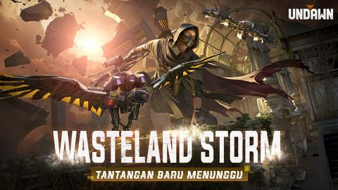

Garena Undawn Wasteland Storm: Ekspansi Baru dengan Tantangan Pasca-Apokaliptik yang Lebih Seru

Garena Undawn terus memperbarui dan meningkatkan pengalaman para pemainnya dengan menghadirkan ekspansi terbaru yang sangat dinantikan: Wasteland Storm. Ekspansi ini membawa banyak perubahan yang mengubah dinamika permainan dengan memberikan tantangan lebih besar. Pemain kini bisa merasakan dunia yang lebih luas, musuh yang lebih kuat, serta berbagai fitur baru yang menuntut keterampilan bertahan hidup yang lebih tinggi. Apa saja yang dibawa oleh Wasteland Storm? Berikut ulasan lengkap yang akan mengajak Anda menjelajahi dunia pasca-apokaliptik yang lebih berbahaya dan menantang ini.
Apa Itu Garena Undawn?
Garena Undawn adalah game survival open-world yang memberikan pengalaman bertahan hidup di dunia pasca-apokaliptik. Dalam game ini, pemain berperan sebagai salah satu penyintas yang harus bertahan hidup di tengah kerusakan dunia akibat bencana besar. Pemain harus berburu, bertani, membangun perlindungan, dan melawan musuh yang tak terhitung jumlahnya, termasuk zombie dan makhluk mutasi lainnya.
Dengan grafis yang realistis dan dunia terbuka yang luas, Garena Undawn menawarkan pengalaman bertahan hidup yang sangat mendalam. Setiap keputusan dalam game ini sangat krusial, mulai dari mengelola sumber daya, memilih senjata, hingga menjalin kerja sama dengan pemain lain. Sejak peluncuran awalnya, game ini terus berkembang dengan pembaruan yang memperkaya pengalaman bermain, dan Wasteland Storm menjadi salah satu ekspansi yang paling dinantikan oleh para penggemar.
Apa yang Baru di Garena Undawn – Wasteland Storm?
Ekspansi Wasteland Storm tidak hanya menambah konten baru, tetapi juga menyegarkan elemen dasar dari Garena Undawn. Berikut beberapa fitur baru yang hadir dalam ekspansi ini:
1. Peta Baru: Wasteland yang Lebih Luas dan Berbahaya
Salah satu fitur utama dari Wasteland Storm adalah hadirnya peta baru yang lebih luas dan penuh bahaya, yaitu Wasteland. Area ini menawarkan medan yang sangat kontras dengan peta-peta sebelumnya, dengan banyak area terbuka, reruntuhan, dan gurun yang sangat sulit dijelajahi.
Di peta Wasteland, pemain akan menghadapi kondisi ekstrem seperti badai pasir yang mengurangi jarak pandang, serta suhu yang bisa sangat tinggi atau rendah. Pemain perlu mencari tempat berteduh, memakai pakaian pelindung, dan mengelola persediaan makanan serta minuman dengan lebih bijak. Selain itu, eksplorasi di Wasteland menghadirkan ancaman yang lebih besar dengan keberadaan makhluk mutasi dan zombie yang siap menyerang.
2. Musuh Baru: Kreatur dan Zombie yang Lebih Mematikan
Pemain yang sudah terbiasa dengan zombie biasa di Garena Undawn akan dihadapkan dengan musuh baru yang jauh lebih mematikan dalam Wasteland Storm. Salah satunya adalah Sand Beasts, makhluk mutasi yang hidup di gurun dan memiliki kekuatan fisik luar biasa. Mereka sangat cepat dan mampu menyerang dalam kelompok, menjadikannya ancaman yang besar jika tidak dihadapi dengan strategi yang tepat.
Selain itu, ada Wasteland Zombies, zombie yang telah beradaptasi dengan kondisi ekstrem di Wasteland. Zombie ini lebih kuat dan lebih tahan terhadap senjata standar, bahkan memiliki kemampuan untuk menembus perlindungan pemain. Beberapa di antaranya juga memiliki kemampuan khusus, seperti Explosive Zombies yang dapat meledak ketika mendekat, menambah kesulitan dalam pertempuran.
3. Badai Pasir: Fenomena Alam yang Membahayakan
Badai Pasir adalah salah satu fitur baru yang paling menantang di Wasteland Storm. Fenomena alam ini terjadi secara acak dan dapat mengurangi visibilitas pemain, menjadikan eksplorasi jauh lebih sulit. Dalam badai pasir, pemain akan kesulitan melihat musuh, mencari sumber daya, atau bahkan menemukan tempat berteduh.
Badai Pasir juga membawa dampak pada ekosistem, membuat musuh menjadi lebih agresif dan lebih banyak muncul di luar tempat perlindungan. Untuk bertahan hidup dalam badai pasir, pemain harus segera mencari tempat berteduh atau membangun perlindungan darurat agar dapat bertahan dalam kondisi yang ekstrem ini.
4. Sistem Bertahan Hidup yang Lebih Kompleks
Sistem bertahan hidup di Wasteland Storm menjadi lebih kompleks dan menantang. Pemain kini harus menghadapi kondisi cuaca yang ekstrem, seperti suhu tinggi atau rendah yang mempengaruhi tubuh dan stamina karakter. Dehidrasi dan kelelahan menjadi masalah yang lebih sering terjadi, mengharuskan pemain untuk lebih bijak dalam mengelola makanan, minuman, serta perlengkapan bertahan hidup lainnya.
Untuk menghadapi tantangan ini, pemain dapat memanfaatkan alat baru seperti Filter Pasir untuk melindungi diri dari badai pasir dan Perlengkapan Penangkal Suhu yang memberikan perlindungan terhadap suhu ekstrem. Crafting juga menjadi lebih penting, dengan pemain harus membuat senjata dan alat bertahan hidup yang lebih canggih untuk menghadapi tantangan di Wasteland.
5. Misi Baru dan Event Musiman
Wasteland Storm menghadirkan misi baru yang lebih mendalam dan menantang. Pemain akan dibawa untuk mengungkap misteri di balik kehancuran dunia ini, menjelajahi wilayah yang belum terjamah, dan menghadapi musuh baru yang lebih kuat.
Selain misi utama, ada juga berbagai event musiman yang menawarkan tantangan tambahan dengan hadiah eksklusif. Salah satunya adalah Wasteland Survival, event besar di mana pemain harus bertahan hidup di tengah badai pasir dan melawan gelombang musuh yang semakin kuat. Event ini memberikan hadiah langka, termasuk senjata khusus dan item bertahan hidup yang hanya bisa didapatkan dengan menyelesaikan tantangan.
6. Pembaruan Fitur Multiplayer
Ekspansi ini juga membawa pembaruan penting pada fitur multiplayer. Salah satu fitur baru adalah Survival Guild, di mana pemain dapat bergabung dalam guild atau aliansi untuk bertahan hidup bersama di dunia yang lebih keras ini. Guild memungkinkan pemain untuk berbagi sumber daya, bertarung melawan musuh, dan membangun markas bersama.
Selain itu, ada juga Co-op Mission yang dirancang untuk tim, di mana pemain dapat bekerja sama dalam menyelesaikan misi besar atau mengalahkan bos yang sangat kuat. Fitur-fitur ini membuat pengalaman multiplayer menjadi lebih seru dan mendalam.
Mengapa Pemain Harus Menyukai Garena Undawn – Wasteland Storm?
Berikut adalah beberapa alasan mengapa ekspansi Wasteland Storm di Garena Undawn sangat layak untuk dicoba:
1. Dunia yang Lebih Luas dan Menantang
Dengan hadirnya peta Wasteland yang lebih besar dan berbahaya, pemain akan merasakan pengalaman bertahan hidup yang jauh lebih menantang. Medan yang sulit, musuh yang lebih mematikan, dan cuaca ekstrem membuat pemain harus berpikir lebih cermat dalam setiap langkahnya.
2. Musuh yang Lebih Mematikan dan Beragam
Sand Beasts dan Wasteland Zombies yang lebih tangguh menambah keseruan dalam pertempuran. Pemain perlu memilih strategi dan senjata yang tepat untuk menghadapi musuh-musuh yang lebih beragam dan sulit ditaklukkan.
3. Sistem Bertahan Hidup yang Lebih Dalam
Dengan tantangan suhu ekstrem, dehidrasi, dan badai pasir, sistem bertahan hidup dalam Wasteland Storm menjadi lebih kompleks dan memacu pemain untuk lebih berhati-hati dalam mengelola persediaan serta membuat peralatan bertahan hidup.
4. Event dan Misi Menarik
Event musiman dan misi baru memberikan banyak konten tambahan yang menyegarkan pengalaman bermain. Hadiah eksklusif yang hanya tersedia dalam event membuat pemain terus kembali untuk mencoba tantangan baru.
5. Pengalaman Multiplayer yang Lebih Seru
Bergabung dalam Survival Guild atau bekerja sama dalam Co-op Mission memberikan elemen sosial yang menyenangkan dan memperkaya pengalaman bermain bersama teman.
Kesimpulan: Tantangan Baru yang Seru dan Memikat
Ekspansi Wasteland Storm di Garena Undawn membawa banyak perubahan besar yang menambah tantangan dan keseruan dalam permainan survival ini. Dengan peta yang lebih luas, musuh yang lebih mematikan, dan sistem bertahan hidup yang lebih kompleks, ekspansi ini menawarkan pengalaman yang lebih mendalam bagi para pemain. Bagi Anda yang mencari tantangan baru dalam bertahan hidup, Wasteland Storm adalah pilihan yang wajib dicoba. Jelajahi dunia gurun yang penuh bahaya, hadapi musuh-musuh baru, dan buktikan kemampuan Anda untuk bertahan hidup di dunia pasca-apokaliptik yang mematikan.
Tunggu apa lagi? Segera Top Up Garena Undawn di Topupgim untuk mendapatkan sumber daya yang Anda butuhkan dalam menghadapi tantangan Wasteland Storm dan bertahan lebih lama di dunia yang lebih keras!